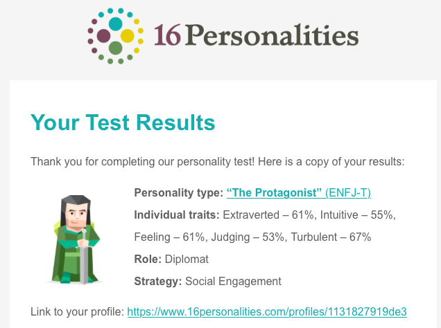
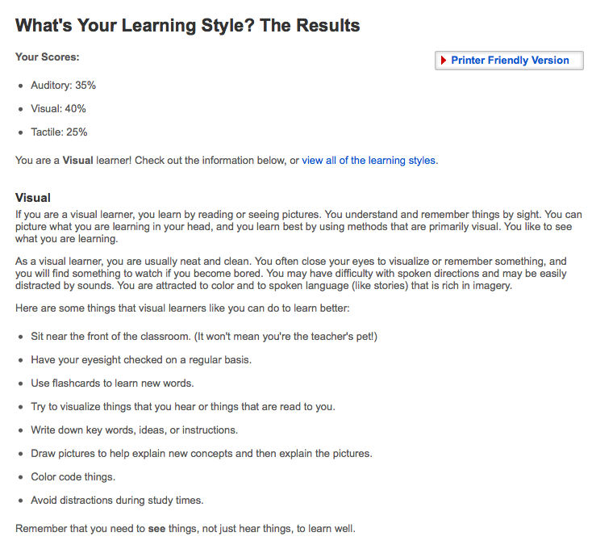
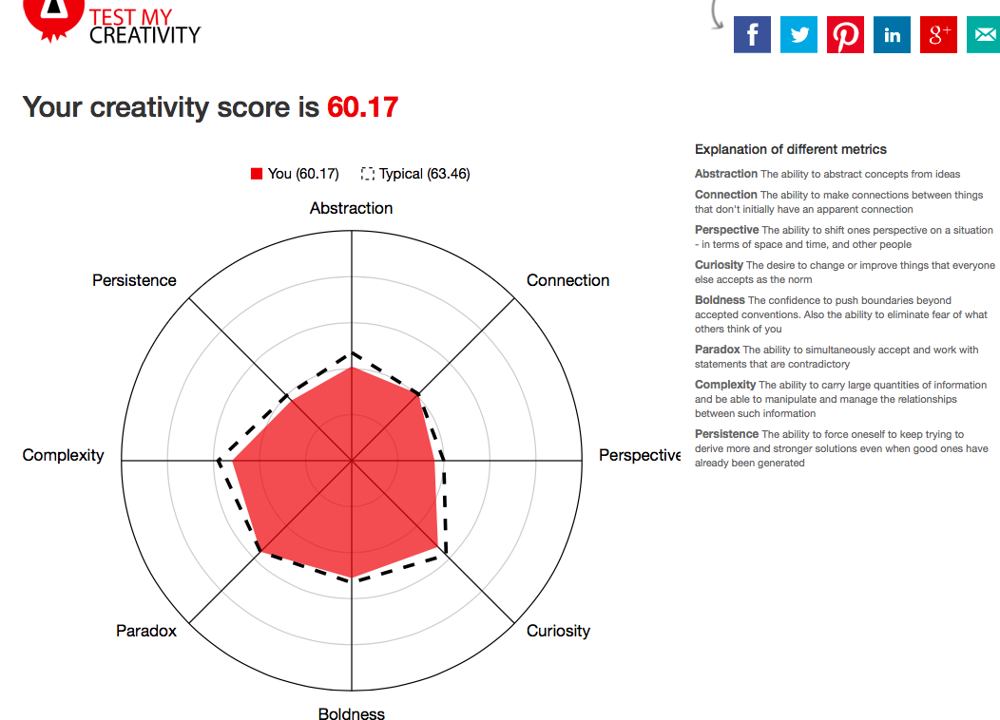

Personal Information
Interest in IT
IT is information technology, it contains a lot of
things . There are actually three levels of IT: the first layer is hardware,
mainly refers to data storage, processing and transmission of host and network
communications equipment; the second layer refers to software, including
information that can be used to collect, store, retrieve, analyze, apply, evaluate
information. Various software, which includes what we commonly refer to as
business management software such as ERP (enterprise resource planning), CRM
(customer relationship management), SCM (supply chain management), etc., as
well as WF (workflow) to enhance process management. Management software,
ancillary analysis DW/DM (data warehouse and data mining) software, etc.; third
layer refers to the application, refers to the collection, storage, retrieval,
analysis, application, evaluation using a variety of information, including
application of ERP, CRM, SCM Other software directly assists in
decision-making, including using other decision analysis models or using DW/DM
and other technical means to further improve the quality of analysis and assist
decision-makers in making decisions (emphasizing one point but only assisting
rather than replacing human decision-making).
What is
my interest in IT ?
I am
really interested in coding. I want to familiar to use all the language in the
future and become a great Coder. I think the only way to become a good Code is
practice more and more. I saw my friend developed some software to give his
life more convenient.
When
did your interest in IT start? Was there a particular event or person that
sparked
Your
interest?
I
have been interested in IT since the Year11. At that time, my cousin studied
Master of Software Engineering. I always went to my cousin's house to ask him
question. I was very curious when he programmed in front of me. He infected me
and made me enjoy programming.
My
IT experience
I
only have a little experience about IT. I learned some C++ programming and
Cisco Networking in RMIT Foundation study. In foundation study, I only learned
some entry-level of networking and programming. For example: Network Mask and
small shopping system Assignment (Discount Club).
Reasons
to choose RMIT university
I
choose RMIT university, I chose college because of its high quality education,
lots activities, good tutoring for international students and its it is very
famous in Australia. The location of RMIT University is in the middle of the
city. It is very convenient for me to go to school.
What
do I expect to learn during my studies?
First,
IT is a very broad scope. There are many arguably irrelevant topics in this
field. It's best to think clearly if technology is the way you want to work in
the future. If so, please try hard to learn the technology. What you want to
learn depends on what you want to do in the future. Second，I want to be a Software Developer in the future. So i
need to learn all the language and use them skilfully , C ++, JAVA ,PHP ,HTML,
etc. Each language has its own specific suitable for doing things, such as
doing background and mobile phone side things will generally use C++ and JAVA,
the website mostly use HTML, and games with C ++ is faster and so on . From now
on, I will make efforts to learn programming language. In the three years of
university, I accumulated a slight knowledge every day. Finally, I think i will
just become an outstanding programmer.
Ideal
Job
My
ideal position is a professional Software Developer. I don't know why I want to
be a Software Developer. I just think it has an appeal to me and I aim at
creating something. Maybe I like to put things together when I was Child. So I
am proud when I see my own software is running after Coding.
This
position requires many conditions, experience and skills. The first condition
is that I need to complete my university with excellent results. The university
must be a renowned university in Australia, and my major must be computer
science and software engineering. The second condition is that I must have a
deep understanding of the university's Javascript/Angularis and the Databases.
The third condition is that I must have experience with XML,XSL, XSLT or JSON.
The last condition is that I must be a Australia Permanent resident or Citizen.
I
only have a little experience now. I had some experience about C++ and Cisco in
Rmit Foundation Studies. Now, I am learning Javascript and website setting in
programming class . And I will be an Australian Permanent resident at the end
of this year. Those conditions are all fit for this position.
I
will try my best to learn the programming, web programming and databases. I
will practice more and more exercise to the software what should I need. This
can want to make sure I can have the experience for those parts and have a deep
understanding of them.
Profile
Online test 16 Personalities: https://www.16personalities.com
Result link: https://www.16personalities.com/profiles/1131827919de3

Online test Education Planner: http://www.educationplanner.org/students/self-assessments/learning-styles-quiz.shtml

Online test: TEST MY CREATIVITY :
http://www.testmycreativity.com

What
do the result of these tests mean for me?
My Personalities
online test result is extraverted-61%, Intuitive-55%,
feeling-61%,Judging-53%,Turbulent-67%. After
the test, This result tells me that I am a sleek person with unique judgment
and communication skills. I can walk in various social situations. My result of
leaner style test is Visual learner.
That means I am more suitable to learn through reading or pictures .My creativity score is only 60.17, It is little bit low, I think I need
to improve my imagination. In the past,
my understanding of myself had always been superficial. I have not conducted a
profound, comprehensive, and unified thinking, and I am still not very familiar
with my character. After these tests, let me have a deep understanding of my
character, can better plan for future study, and have a wonderful guiding role
in future study and employment..
How
do I think these results may influence my behaviour in a team?
I
think these tests are not very accurate and can only play a psychologically
suggestive role. These results have
little effect on my behaviour in the team. I am of course pleased that the
result is superior, and I will do better. If the measured result is not
reliable, I will correct my behaviour.
How
should I take this into account when forming a team?
I am
a person who is good at communication，I think I can get along quickly with the team
members. When I do things many times, I rely on my feelings and I am not stable
enough. So I need to find a calm team member to stop me from making mistakes
when necessary. Through the test results, find similar
personality members or complementary members. I can find the person who has the
same hobby and do the project together. Make sure we can learn from each
other’s need in the same project.
Project Idea
I am passionate about automation system.
Automation system is a pretty cool area in Information Technology, so I got an
idea of an insurance automation system. During 2017, there were 1227 road
deaths by accident in Australia. For 2018, there have been 188 death
(provisional). This is 22 death (13.3%) higher than the same period last year.
Many Road deaths because The life hasn't been saved in time. In this insurance
automation system, it will automatically check person's body conditions，and
send out the SOS distress signal to calling the emergency ambulance. And then,
this system will scan the loss of the car，according
to the insurance company algorithm to examine the economic losses, report to
the insurance company to recover the loss. I am sure this idea would help lots
of people.
A
project that completely automates insurance services. Imagine an insurance on
properties or vehicles where the item insured against is fitted with sensors
that automatically relay an event of damage to the property. To explain more
easily, I will use an example of personal car insurance. Take a case of when
you are driving in the city then unfortunately you get into an accident that
renders the vehicle un-operational. The sensor in the car relays the information
of the vehicle to a microcontroller that is connected online. The
microcontroller then connects to an online insurance AI-like algorithm that is
developed for the insurance company. The algorithm then connects through your
smartphone by automatically activating an app developed for such a process. The
app then checks your health state by asking questions utilising smartphone's
voice recognition capabilities. If you are hurt, the app automatically sends
SOS call to an ambulance service. At the same time the insurance AI sends a
drone to access the damage on the car by taking pictures so as to be used for
the insurance claim process. At the same time, also the AI sends for tough
truck service to come to tough your damaged vehicle. The idea is to fully
automate the whole process and the whole process can be further fine tuned with
enough research and time.
This
is a big project that requires hardware engineers and software engineers to
work together. This project may contain lots technology for Sensor, AI
Technology, Camera, Console, Information Transmission Technology. It may need
to use lots of Software and skills. For example: MATLAB, CAD, C language, STEP7
and compilation skills. We should know some knowledge of the use of various
controllers to master , the design of the control system (including peripheral
equipment, hardware and software), inverter, some theoretical knowledge
(automatic control, motion control, process control), mechanical design
recommendations. I think if the team has enough knowledge and enough skill,
this project it should be a possible project idea.
This
project has both advantages and disadvantages, but in the summary, profits
outweigh the disadvantages. If this project is successful, the number of deaths
due to traffic accidents will gradually decrease in the world. It will be a lot
easier for drivers to report insurance recovery losses. In other ways, this
project will bring some bad influence. This project is an Insurance Automation
System, it can use the insurance company's algorithm to automatically calculate
the loss, eliminating many procedures, so it will cause lots of insurance
worker lose their jobs. In case, this project can save lots of life for first
time in the car accident.